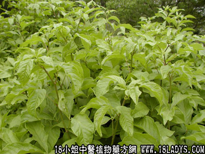

鸭脚树皮(中药材植物名:鹅掌紫)(植物科目:五加科)

别名：伞托树皮。
植物名：鹅掌紫。
生长环境：本品为乔木，山地的疏树林中，常见的多生长于较潮湿、阳光充足的环境。
分布：我国南部和东南部各省极为常见的树种。广东各地、广州郊区都有，此外越南亦有。
入药部分：树皮。
采集期：全年。
自采地点：山岗。
性味：性凉、味苦、微香。
功能：解表、发汗。
主治、用量和用法：1、外感发热头痛，配伍用；2、夹色伤寒，配伍用。
验方：（治外感发热夹色方）鸭脚树皮5钱、簕角根5钱、狗肝菜5钱、榕树须5钱、岗梅5钱、鹰不泊5钱、清水四碗，煎成一碗服。
（方解）本饭簕角根、狗肝菜、鹰不泊、岗梅为治外感之药；鸭脚树皮、榕树须则以治疗夹色伤寒见长。组合成方，功效可靠。
（方歌）外感发热夹色兼，鸭脚树皮岗梅添，簕角榕须狗肝菜，鹰不泊来病可痊。
附录：（叶）1、治风瘼：生干可用，煎水外洗；2、皮肤热毒痕痒：用法同上。